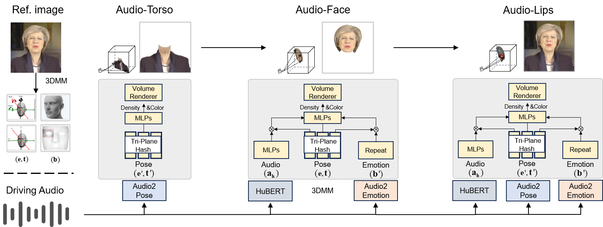

IJCAI
Audio-driven talking avatars often optimize lip motion, facial expression, and upper-body pose as separate tasks. The resulting animation becomes inconsistent during silence, and the stacked modules are usually too heavy for real-time use. SyncAnimation addresses both issues with a real-time NeRF pipeline that generates audio-synchronized pose, expression, and lip motion together.

As shown in Fig. 2, an AudioPose Syncer encodes the input speech and predicts head pose together with upper-body motion. An AudioEmotion Syncer then produces expression dynamics that stay coherent in both speaking and silent intervals. These signals are fed into a unified generation process that progressively synthesizes the head, upper body, and lip shapes, and a High-Synchronization Human Renderer composes the final avatar so that the head and body remain temporally aligned.